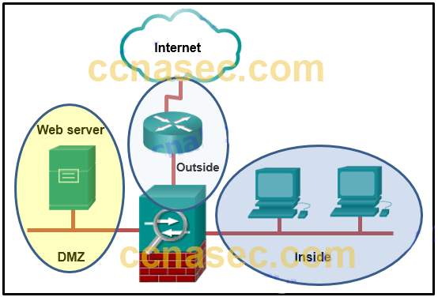
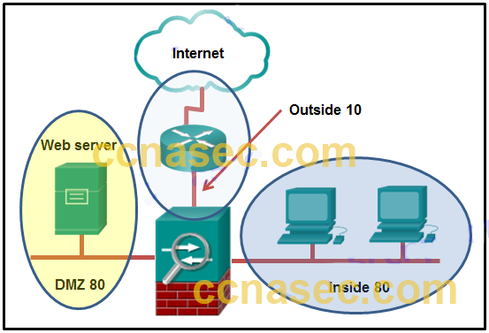
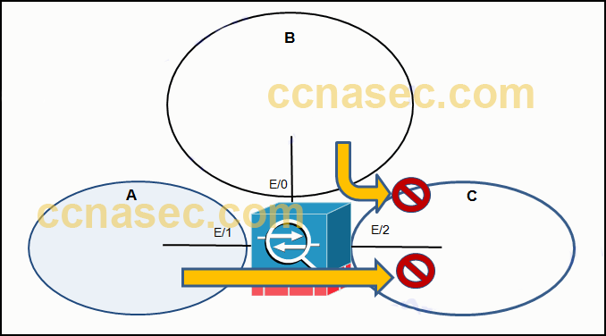
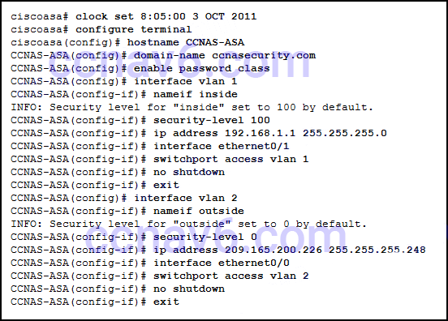
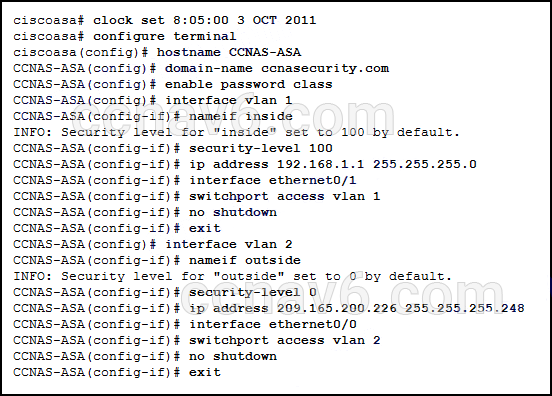
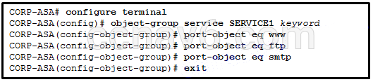
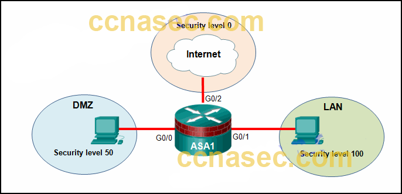
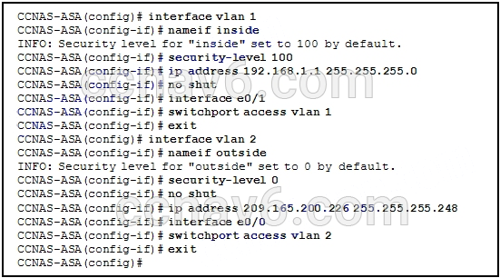
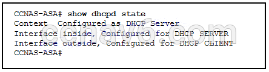
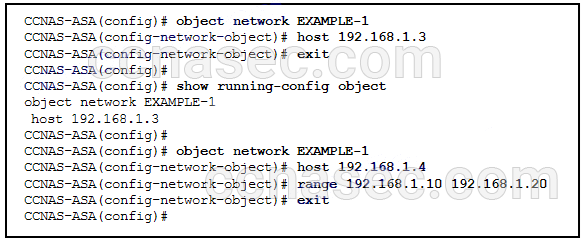

1.Consulte la presentación. Un administrador de red está configurando el nivel de seguridad para el ASA. ¿Cuál es la mejor práctica para asignar el nivel de seguridad en las tres interfaces?

- Fuera de 40, Dentro de 100, DMZ 0
- Fuera de 0, Dentro de 35, DMZ 90
- Fuera de 0, Dentro de 100, DMZ 50 *
- Fuera de 100, Dentro de 10, DMZ 40
- @Javi__Super
Cisco ASA asigna niveles de seguridad para distinguir entre las diferentes redes que conecta. Los niveles de seguridad definen el nivel de confiabilidad de una interfaz. Cuanto más alto sea el nivel, más confianza tendrá la interfaz. Los números de nivel de seguridad varían entre 0 (no confiable) a 100 (muy confiable). Por lo tanto, a la interfaz que se conecta a Internet se le debe asignar el nivel más bajo. A la interfaz que se conecta a la red interna se le debe asignar el nivel más alto. A la interfaz que se conecta a la red DMZ se le debe asignar un nivel entre ellos.
2.Consulte la presentación. Un administrador de red está configurando el nivel de seguridad para el ASA. ¿Qué declaración describe el resultado predeterminado si el administrador intenta asignar la interfaz interna con el mismo nivel de seguridad que la interfaz DMZ?

- El ASA permite el tráfico entrante iniciado en Internet a la DMZ, pero no a la interfaz interna.
- La consola ASA mostrará un mensaje de error.
- El ASA no permitirá el tráfico en ninguna dirección entre la interfaz interior y la DMZ. *
- El ASA permite el tráfico desde el interior al DMZ, pero bloquea el tráfico iniciado en el DMZ a la interfaz del interior.
- @Javi__Super
Se puede asignar el mismo nivel de seguridad a varias interfaces en un ASA. Para permitir la conectividad entre las interfaces con los mismos niveles de seguridad, se requiere el comando de configuración global inter-interface del mismo permiso de tráfico de seguridad. El tráfico de la red de nivel superior a la red de nivel inferior está permitido de forma predeterminada. Sin embargo, el tráfico iniciado en la red de nivel inferior se le niega el acceso a la red de nivel superior de forma predeterminada.
3.¿Cuál es la diferencia entre las ACL IPv4 de ASA y las ACL IPv4 de IOS?
- Las ACL de ASA siempre tienen nombres, mientras que las ACL de IOS siempre están numeradas.
- Se pueden aplicar varias ACL de ASA en una interfaz en la dirección de ingreso, mientras que solo se puede aplicar una ACL de IOS.
- Las ACL de ASA usan la máscara de subred para definir una red, mientras que las ACL de IOS usan la máscara de comodín. *
- Las ACL de ASA no tienen una denegación implícita al final, mientras que las ACL de IOS sí lo tienen.
- @Javi__Super
Existen muchas similitudes entre las ACL de ASA y las ACL de IOS, incluyendo:
En ambas, existe una denegación implícita.
Solo se aplica una ACL por interfaz, por protocolo y por dirección.
Ambos usan negar y permitir ACE.
Las ACL pueden ser nombradas o numeradas.
Las ACL de ASA se diferencian de las ACL de IOS en que usan una máscara de red (por ejemplo, 255.255.255.0) en lugar de una máscara de comodín (por ejemplo, 0.0.0.255). Aunque la mayoría de las ACL de ASA tienen nombre, también pueden estar numeradas.
4.¿Cuál es uno de los inconvenientes de usar la operación en modo transparente en un dispositivo ASA?
- no hay soporte para direccionamiento IP
- no hay apoyo para la gestión
- no hay soporte para QoS *
- no hay soporte para usar un ASA como un conmutador de Capa 2
- @Javi__Super
En modo transparente, el ASA funciona como un dispositivo de Capa 2. Un dispositivo ASA puede tener una dirección IP asignada en la red local para fines de administración. Los inconvenientes de usar el modo transparente no incluyen la compatibilidad con protocolos de enrutamiento dinámico, VPN, QoS o retransmisión DHCP.
5.¿Qué comando define un grupo DHCP que usa la cantidad máxima de direcciones de clientes DHCP disponibles en un ASA 5505 que usa la licencia Base?
- CCNAS-ASA (config) # dhcpd dirección 192.168.1.20-192.168.1.50 dentro
- CCNAS-ASA (config) # dhcpd dirección 192.168.1.10-192.168.1.100 dentro
- CCNAS-ASA (config) # dhcpd dirección 192.168.1.25-192.168.1.56 dentro *
- CCNAS-ASA (config) # dhcpd dirección 192.168.1.30-192.168.1.79 dentro
- @Javi__Super
La licencia ASA 5505 Base es una licencia para 10 usuarios y, por lo tanto, el número máximo de clientes DHCP admitidos es 32. El único grupo que contiene 32 direcciones es el grupo con rango 192.168.1.25-192.168.1.56
6.Consulte la presentación. Un administrador crea tres zonas (A, B y C) en un ASA que filtra el tráfico. El tráfico que se origina en la Zona A que va a la Zona C se niega, y el tráfico que se origina en la Zona B que va a la Zona C se niega. ¿Cuál es un escenario posible para las Zonas A, B y C?

- A - DMZ, B - Interior, C - Exterior
- A - Interior, B - DMZ, C - Exterior
- A - DMZ, B - Exterior, C - Interior *
- A - Exterior, B - Interior, C - DMZ
- @Javi__Super
7.¿Qué dos afirmaciones son verdaderas sobre las ACL estándar de ASA? (Escoge dos.)
- Son el tipo más común de ACL.
- Se aplican a las interfaces para controlar el tráfico.
- Por lo general, solo se utilizan para rutas OSPF. *
- Identifican solo la dirección IP de destino. *
- @Javi__Super
Las ACL estándar de ASA se utilizan para identificar las direcciones IP de destino, a diferencia de las ACL de IOS donde una ACL estándar identifica el host / red de origen. Por lo general, solo se usan para las rutas OSPF y se pueden usar en un mapa de ruta para la redistribución de OSPF. Las listas de acceso estándar no se pueden aplicar a las interfaces para controlar el tráfico.
8.¿Cuál es una característica de los niveles de seguridad ASA?
- Es necesario configurar una ACL para permitir explícitamente el tráfico de una interfaz con un nivel de seguridad más bajo a una interfaz con un nivel de seguridad más alto. *
- Cada interfaz operativa debe tener un nombre y se le debe asignar un nivel de seguridad de 0 a 200.
- Cuanto más bajo sea el nivel de seguridad en una interfaz, más confianza tendrá la interfaz.
- El tráfico entrante se identifica como el tráfico que se mueve desde una interfaz con un nivel de seguridad más alto a una interfaz con un nivel de seguridad más bajo.
- @Javi__Super
El ASA asigna niveles de seguridad para distinguir entre redes internas y externas. Cuanto más alto sea el nivel, más confianza tendrá la interfaz. Los números de nivel de seguridad varían entre 0 y 100. Cuando el tráfico se mueve desde una interfaz con un nivel de seguridad más alto a una interfaz con un nivel de seguridad más bajo, se considera tráfico saliente.
9.¿Qué se debe configurar en un dispositivo Cisco ASA para admitir la autenticación local?
- AAA *
- la dirección IP del servidor RADIUS o TACACS +
- contraseñas encriptadas
- SSHv2
- @Javi__Super
Un ASA puede configurarse para autenticarse utilizando una base de datos de usuarios local o un servidor externo, o ambos. La autenticación local en un Cisco ASA requiere la configuración de AAA en el ASA.
10.¿Qué declaración describe una diferencia entre la función CLI IOS de Cisco ASA y la función CLI IOS del enrutador?
- ASA utiliza el? comando mientras que un enrutador usa el comando de ayuda para recibir ayuda sobre una breve descripción y la sintaxis de un comando.
- Para usar un comando show en un modo de configuración general, ASA puede usar el comando directamente, mientras que un enrutador deberá ingresar el comando do antes de emitir el comando show. *
- Para completar un comando parcialmente escrito, ASA usa la combinación de teclas Ctrl + Tab, mientras que un enrutador usa la tecla Tab.
- Para indicar el modo CLI EXEC, ASA usa el símbolo% mientras que un enrutador usa el símbolo #.
- @Javi__Super
El ASA CLI es un sistema operativo propietario que tiene una apariencia similar a la del Cisco Router IOS. Aunque comparte algunas características comunes con el enrutador IOS, tiene sus características únicas. Por ejemplo, un comando de la CLI de ASA puede ejecutarse independientemente de la solicitud del modo de configuración actual. El comando do de IOS no es requerido ni reconocido. Tanto la CLI de ASA como la CLI del enrutador utilizan el símbolo # para indicar el modo EXEC. Ambos CLI usan la tecla Tab para completar un comando parcialmente escrito. A diferencia del enrutador IOS, el ASA proporciona un comando de ayuda que proporciona una breve descripción y sintaxis de los comandos para ciertos comandos.
11.¿Cuáles son las dos configuraciones predeterminadas de fábrica en un ASA 5505? (Escoge dos.)
- A la VLAN 1 se le asigna un nivel de seguridad de 100. *
- El servidor web interno está deshabilitado.
- PAT está configurado para permitir que los hosts internos accedan a redes remotas a través de una interfaz Ethernet. *
- El servicio DHCP está habilitado para que los hosts internos obtengan una dirección IP y una puerta de enlace predeterminada desde el dispositivo ascendente.
- @Javi__Super
El ASA 5505 se entrega con una configuración predeterminada que incluye lo siguiente:
VLAN 1: para la red interna con nivel de seguridad 100.
VLAN 2: para la red externa con nivel de seguridad 0 y debe adquirir su dirección IP y la ruta predeterminada desde un dispositivo ascendente .
PAT se configura de modo que las direcciones de host internas se traduzcan utilizando la dirección IP de la interfaz externa.
El acceso HTTP para ASDM está habilitado.
Los servicios DHCP se proporcionan a los hosts internos.
12.Consulte la presentación. Se configuraron dos tipos de interfaces VLAN en un ASA 5505 con una licencia Base. El administrador desea configurar una tercera interfaz VLAN con funcionalidad limitada. ¿Qué acción debe tomar el administrador para configurar la tercera interfaz?

- Debido a que el ASA 5505 no admite la configuración de una tercera interfaz, el administrador no puede configurar la tercera VLAN.
- El administrador debe ingresar el comando no forward interface vlan antes del comando nameif en la tercera interfaz. *
- El administrador debe adquirir la licencia de Security Plus, porque la licencia de Base no es compatible con la acción propuesta.
- El administrador configura la tercera interfaz VLAN de la misma manera que los otros dos se configuraron, porque la licencia Base es compatible con la acción propuesta.
- @Javi__Super
Un ASA 5505 con una licencia Base no permite crear tres interfaces VLAN que funcionen completamente, pero se puede crear una tercera interfaz VLAN "limitada" si se configura por primera vez con el comando no forward interface vlan. Cuando se configuran las interfaces VLAN internas y externas, se debe ingresar el comando no forward interface vlan number antes de ingresar el comando nameif en la tercera interfaz. Se requiere la licencia Security Plus para lograr una funcionalidad completa.
13.¿Cuál es el propósito de las ACL de tipo web en un ASA?
- para inspeccionar el tráfico saliente hacia ciertos sitios web
- para restringir el tráfico que está destinado a un ASDM
- para monitorear el tráfico de retorno que responde a las solicitudes del servidor web que se inician desde la interfaz interna
- para filtrar el tráfico de usuarios VPN SSL sin cliente *
- @Javi__Super
Las ACL de tipo web se utilizan en una configuración que admite el filtrado para usuarios VPN SSL sin clientes.
14.Consulte la presentación. Un administrador de red ha configurado NAT en un dispositivo ASA. ¿Qué tipo de NAT se utiliza?

- dentro de NAT *
- NAT estática
- NAT bidireccional
- fuera de NAT
- @Javi__Super
NAT se puede implementar en un ASA usando uno de estos métodos:
dentro de NAT: cuando un host de una interfaz de mayor seguridad tiene tráfico destinado a una interfaz de menor seguridad y ASA traduce la dirección de host interna a una dirección global
fuera de NAT: el tráfico de una interfaz de seguridad más baja destinada a un host en la interfaz de seguridad más alta se traduce como
NAT bidireccional, cuando se usan juntos NAT interno y NAT externo
porque el comando nat se aplica de manera que la interfaz interna se asigna a la interfaz externa, El tipo de NAT está dentro. Además, la palabra clave dinámica en el comando nat indica que se trata de una asignación dinámica.
15.Consulte la presentación. Un administrador de red está configurando un grupo de objetos en un dispositivo ASA. ¿Qué palabra clave de configuración se debe usar después del nombre de grupo de objetos SERVICE1?

- icmp
- ip
- udp
- tcp *
- @Javi__Super
Debido a que este es un grupo de objetos de servicio, la palabra clave debe indicar qué protocolo se usa. Las opciones son tcp, udp, tcp-udp, icmp y icmpv6. Los comandos subsiguientes indican que los servicios en el grupo son WWW, FTP y SMTP. Debido a que todos estos protocolos utilizan TCP, la palabra clave en el grupo de objetos de servicio debe ser tcp.
16.Cuando se configura el NAT dinámico en un ASA, ¿qué dos parámetros deben ser especificados por los objetos de la red? (Escoge dos.)
- una gama de direcciones privadas que serán traducidas *
- el nivel de seguridad de la interfaz
- el conjunto de direcciones globales públicas *
- la interfaz NAT interior
- @Javi__Super
En un ASA, tanto el conjunto de direcciones que se utilizarán como direcciones globales internas como el rango de direcciones privadas internas que deben traducirse se configuran a través de los objetos de la red.
17.¿Qué función realiza el objeto de configuración de mapas de clase en el marco de políticas modular de Cisco?
- identificar tráfico interesante *
- aplicando una política a una interfaz
- Aplicando una política de tráfico interesante.
- restringiendo el tráfico a través de una interfaz
- @Javi__Super
Hay tres objetos de configuración en el MPF; Mapas de clase, mapas de política y política de servicio. El objeto de configuración de mapas de clase utiliza criterios de coincidencia para identificar el tráfico interesante.
18.Consulte la presentación. Según los niveles de seguridad de las interfaces en ASA1, ¿qué tráfico se permitirá en las interfaces?

- El tráfico de Internet y DMZ puede acceder a la LAN.
- El tráfico de la LAN y DMZ puede acceder a Internet. *
- El tráfico de Internet puede acceder tanto a la DMZ como a la LAN.
- El tráfico de Internet y LAN puede acceder a la DMZ.
- @Javi__Super
Los dispositivos ASA tienen niveles de seguridad asignados a cada interfaz que no forman parte de una ACL configurada. Estos niveles de seguridad permiten que el tráfico de interfaces más seguras, como el nivel de seguridad 100, acceda a interfaces menos seguras, como el nivel 0. Por defecto, permiten que el tráfico de interfaces más seguras (nivel de seguridad más alto) acceda a interfaces menos seguras (seguridad más baja). nivel). El tráfico de las interfaces menos seguras no puede acceder a las interfaces más seguras.
19.¿Cuáles son las tres características del modo enrutado ASA? (Elige tres.)
- Este modo se conoce como un "golpe en el cable".
- En este modo, el ASA es invisible para un atacante.
- Las interfaces de las redes de capa 3 separadas ASA y requieren diferentes direcciones IP en diferentes subredes. *
- Es el modo de despliegue de firewall tradicional. *
- NAT se puede implementar entre redes conectadas. *
El modo enrutado es el modo tradicional para implementar un servidor de seguridad donde hay dos o más interfaces que separan las redes de Capa 3. El ASA se considera un salto de enrutador en la red y puede realizar NAT entre las redes conectadas. El modo enrutado soporta múltiples interfaces. Cada interfaz está en una subred diferente y requiere una dirección IP en esa subred.
20.Consulte la presentación. Un administrador ha configurado un ASA 5505 como se indica, pero aún no puede hacer ping a la interfaz interna desde un host interno. ¿Cuál es la causa de este problema?

- El comando no shutdown se debe ingresar en la interfaz Ethernet 0/1. *
- La VLAN 1 debe ser la interfaz externa y la VLAN 2 debe ser la interfaz interna.
- La VLAN 1 debe asignarse a la interfaz Ethernet 0/0 y VLAN 2 a Ethernet 0/1.
- El nivel de seguridad de la interfaz interna debe ser 0 y la interfaz externa debe ser 100.
- @Javi__Super
VLAN 1 y VLAN 2 se han configurado correctamente. Ni e0 / 0 ni e0 / 1 se han activado. Para que un host interno haga ping a la interfaz interna se requeriría activar la interfaz e0 / 1.
21.Consulte la presentación. De acuerdo con la salida del comando, ¿qué tres afirmaciones son verdaderas acerca de las opciones DHCP ingresadas en el ASA 5505? (Elige tres.)

- La dirección dhcpd [start-of-pool] - [end-of-pool] dentro del comando fue emitida para habilitar al cliente DHCP.
- La dirección dhcpd [start-of-pool] - [end-of-pool] dentro del comando fue emitida para habilitar el servidor DHCP. *
- El comando dhcpd auto-config outside se emitió para habilitar el cliente DHCP. *
- El comando dhcpd enable inside se emitió para habilitar el servidor DHCP. *
- @Javi__Super
22.Consulte la presentación. ¿Qué se mostrará en la salida del comando show running-config object después de ingresar los comandos de configuración presentados en un ASA 5505?

- host 192.168.1.4
- host 192.168.1.3, host 192.168.1.4 y rango 192.168.1.10 192.168.1.20
- host 192.168.1.4 y rango 192.168.1.10 192.168.1.20
- rango 192.168.1.10 192.168.1.20 *
- @Javi__Super
El comando show running-config object se usa para mostrar o verificar el par de máscara / dirección IP dentro del objeto. Sólo puede haber una declaración en el objeto de red. La introducción de un segundo par de máscara / dirección IP reemplazará la configuración existente.
23.¿Qué tipo de NAT se usaría en un ASA donde se traducirán 10.0.1.0/24 dentro de las direcciones solo si el tráfico de estas direcciones está destinado a la red 198.133.219.0/24?
- política NAT *
- NAT dinámico
- NAT estática
- PAT dinámico
- @Javi__Super
La política NAT se basa en reglas que determinan cuándo se traducirán las direcciones de origen específicas. Estas direcciones de origen están destinadas a direcciones de destino específicas o para puertos específicos o tanto para una dirección de destino como para un puerto específico.
24.¿Qué enunciado describe una característica de AAA en un dispositivo ASA?
- La contabilidad se puede utilizar sola. *
- La autorización está habilitada por defecto.
- Si la autorización está deshabilitada, todos los usuarios autenticados tendrán un acceso muy limitado a los comandos.
- Tanto la autorización como la contabilidad requieren que un usuario se autentique primero.
- @Javi__Super
Los servicios AAA (autenticación, autorización y contabilidad) están deshabilitados de forma predeterminada. La autenticación se puede utilizar sola o con autorización y contabilidad. La autorización siempre requiere que un usuario se autentique primero. La contabilidad se puede utilizar sola o con autenticación y autorización. La autorización controla los servicios y comandos que están disponibles para cada usuario autenticado. Si la autorización no está habilitada, la autenticación proporcionará el mismo acceso a los servicios para todos los usuarios autenticados.
25.Un administrador de red está trabajando en la implementación de Cisco Modular Policy Framework en un dispositivo ASA. El administrador emite un comando claro de política de servicio. ¿Cuál es el efecto después de ingresar este comando?
- Se eliminan todas las configuraciones de mapa de clase.
- Se eliminan todos los datos estadísticos de la política de servicio. *
- Se eliminan todas las políticas de servicio.
- Se eliminan todas las configuraciones de mapa de políticas.
- @Javi__Super
En una implementación de MPF, el comando clear service-policy borra las estadísticas de la política de servicio. El comando clear configure service-policy en el modo de configuración global elimina todas las políticas de servicio.
26.¿Qué se necesita para permitir que el tráfico específico que proviene de la red externa de un firewall ASA llegue a una red interna?
- ACL *
- NAT
- protocolos de enrutamiento dinámico
- zona de seguridad exterior 0
- @Javi__Super
Para permitir explícitamente el tráfico de una interfaz con un nivel de seguridad más bajo a una interfaz con un nivel de seguridad más alto, se debe configurar una ACL. De forma predeterminada, el tráfico solo fluirá desde un nivel de seguridad más alto a uno más bajo.